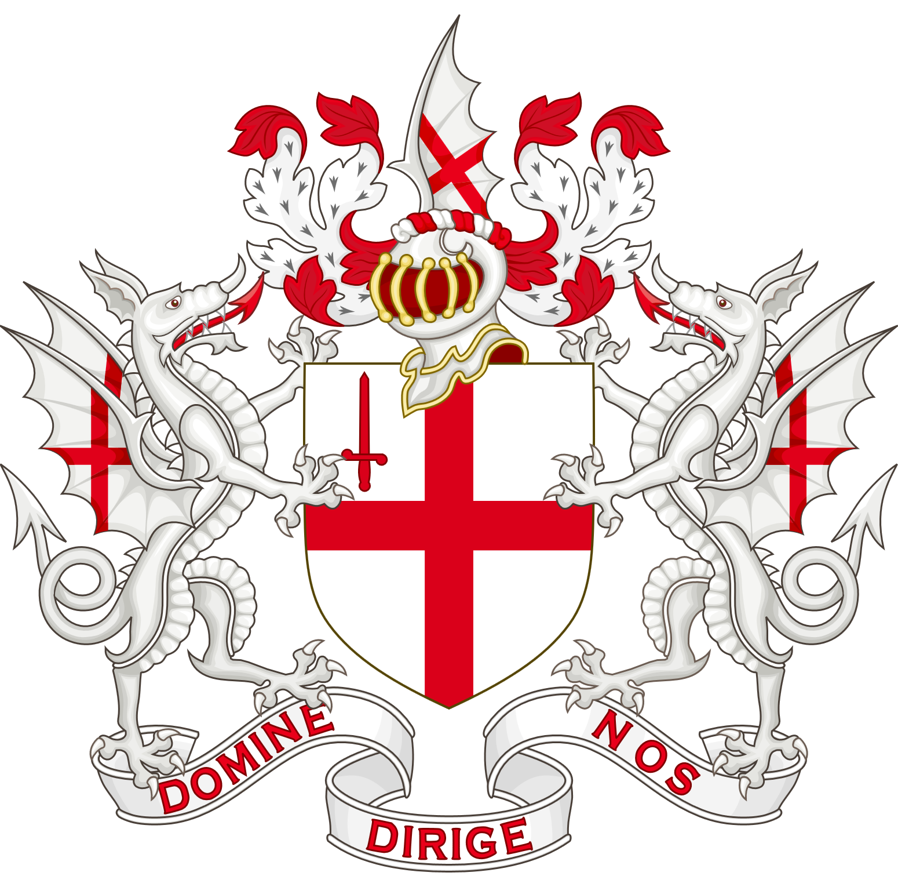
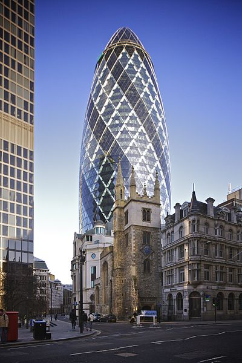

30 St Mary Axe, the Swiss Re Building (colloquially referred to as the Gherkin), is a skyscraper in London's main financial district, the City of London, completed in December 2003 and opened at the end of May 2004. With 40 floors, the tower is 180 metres (591 ft) tall, and stands on the former site of the Baltic Exchange building, which was severely damaged on 10 April 1992 by the explosion of a bomb placed by the Provisional IRA.
